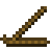
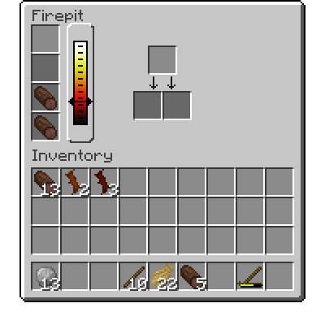
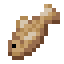
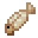

生火
火在文明史上是一项重大的技术进步。想要生火，就必须做一个起火器。对准需要生火的目标按住右键。片刻之后，会产生烟，然后便有几率成功生火。你可能需要多尝试几次才能成功点起火来。



可以用两根木棍制作起火器。
篝火
有了起火器，就可以用它来生起篝火了。生起篝火需要一根原木、三根木棍，以及最多三个引火物。引火物可以是纸、干草或其他类似的物品。引火物不是必须的，但可以增加成功生火的几率。按Q将所需要的物品扔到地面上的同一个方块上，然后对准方块使用起火器来引燃这些物品。
多方块结构
如果成功的话，就能创建一个篝火。
再次与篝火互动就可以打开篝火界面。屏幕的左侧是四个燃料槽。将原木、泥炭、或木棍捆之类的可燃物放置在最上面那格就能将它们添加到篝火里了。篝火会先燃烧最下面那格的燃料。左侧的刻度尺对应了篝火目前的温度。屏幕右侧的格子则可以放置需要加热的物品。

篝火界面

2

暖****
许多有用的物品可以在篝火中加热制作。例如加热木棍就可以做成两根火把。注意！放置在世界中的火把是会燃尽的，但好在你可以用起火器或其他火把重新点燃它们。


热****
篝火还可以用来加热食物。生肉和面团之类的东西都可以在篝火中烧制以延长其保质期。有关保质期的知识请参考这一章节。
篝火可以随时通过手持铲子点击来熄灭。
可以将一些其他物品放置在篝火之上来改变其功能。放置锻铁烤架可将篝火变成烧烤架，可一次加热五个物品。放置陶锅则会将篝火变成大锅，可用来煲汤。要移除篝火上的额外设备，可以按住Shift并按下右键。千万注意不要移除还未冷却的烤架和锅！
多方块结构
一个篝火，添加了烤架或锅。
Firepit fuels have different levels of purity. Adding impure fuels to fires makes them more smokey. If the fire burns very impurely, smoke will start to fly very high in the air. The most pure fuels are logs, with pine being the least pure log. Fuels like pinecones and fallen leaves do not hot enough to do much cooking, and are very impure.